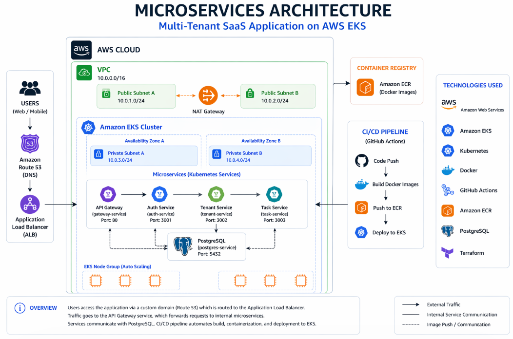
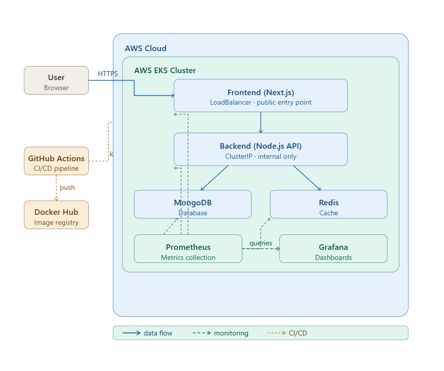

About Me
DevOps & Cloud Engineer with hands-on experience building and automating multi-cloud infrastructure across AWS and Azure, utilizing Kubernetes, Terraform, and advanced CI/CD pipelines.
I have deployed production-style applications on AWS EKS and Azure, automated delivery with GitHub Actions and Azure DevOps, and built monitoring solutions with Prometheus and Grafana to improve visibility, reliability, and deployment consistency.
My focus is on scalable infrastructure, reliable releases, observability, and cloud operations, supported by a practical background in troubleshooting and systems support.
Technical Skills
Cloud & Infrastructure
- AWS (EKS, EC2, S3, VPC)
- Azure (Admin & Services)
- Terraform / OpenTofu
- Ansible
CI/CD & Monitoring
- GitHub Actions
- Azure DevOps / Pipelines
- Prometheus
- Grafana
Containers & Orchestration
- Docker
- Kubernetes
- Docker Compose
- Helm
Scripting & Systems
- Bash
- Python
- Linux Administration
- Git & Version Control
Professional Certifications
Microsoft Certified: Azure DevOps Engineer Expert (AZ-400)
Microsoft Certified
AWS Certified Solutions Architect – Associate
Amazon Web Services (AWS)
Azure Administrator Associate (AZ-104)
Microsoft Certified
SAP S/4HANA TS410
Brandenburg University of Applied Sciences
Google IT Support Professional Certificate
Google / Coursera
Introduction to Linux (LFS101)
The Linux Foundation
Featured DevOps Projects
A focused selection of DevOps and cloud projects covering multi-cloud deployments (AWS & Azure), Kubernetes, CI/CD, infrastructure automation, and production-grade observability.

Azure Ops Platform — Production Infrastructure
Designed and built a production-style Azure infrastructure environment covering robust networking, compute, storage, AKS clustering, automated CI/CD pipelines, and secure security controls.
- Implemented scalable infrastructure components across Azure resources using automated configurations.
- Integrated robust security practices and monitoring solutions for high availability.

SaaS Microservices Platform on AWS EKS
Built and deployed a production-style microservices platform on AWS EKS using Terraform, Kubernetes, Docker, and GitHub Actions.
- Automated delivery with GitHub Actions, reducing deployment time from ~2 hours to ~2 minutes.
- Improved reliability by resolving pod scheduling, storage, and service communication issues.

Expensy — DevOps Deployment on AWS EKS
Designed and deployed a full-stack expense tracking application on AWS EKS using Kubernetes, Docker, and GitHub Actions with real-time observability.
- Containerized and deployed a production-style application on AWS EKS.
- Integrated monitoring with Prometheus and Grafana for reliable releases.
Let's Build Something Reliable Together
I am actively looking for junior or entry-level DevOps, Cloud, and Infrastructure roles where I can contribute my skills in AWS, Azure, Kubernetes, Terraform, and CI/CD automation.